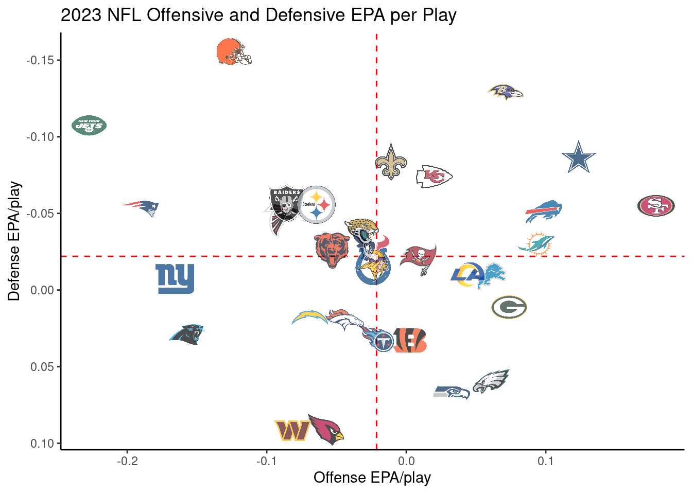

I want your feedback to make the book better for you and other readers. If you find typos, errors, or places where the text may be improved, please let me know. The best ways to provide feedback are by GitHub or hypothes.is annotations.
Opening an issue or submitting a pull request on GitHub: https://github.com/isaactpetersen/Fantasy-Football-Analytics-Textbook
Adding an annotation using hypothes.is.
To add an annotation, select some text and then click the
symbol on the pop-up menu.
To see the annotations of others, click the
symbol in the upper right-hand corner of the page.
3 Getting Started with R for Data Analysis
The book uses R for statistical analyses (http://www.r-project.org). R is a free software environment; you can download it at no charge here: https://cran.r-project.org.
3.1 Initial Setup
To get started, follow the following steps:
- Install
R: https://cran.r-project.org - Install
RStudio Desktop: https://posit.co/download/rstudio-desktop - After installing
RStudio, openRStudioand run the following code in the console to install several keyRpackages:
If you are in Dr. Petersen’s class, also perform the following steps:
- Set up a free account on GitHub.com.
- Download GitHub Desktop: https://desktop.github.com
3.2 Installing Packages
You can install R packages using the following syntax:
For instance, you can use the following code to install the nflreadr package:
3.3 Load Packages
3.4 Download Football Data
3.4.1 Players
3.4.2 Teams
3.4.3 Player Info
3.4.4 Rosters
A Data Dictionary for rosters is located at the following link: https://nflreadr.nflverse.com/articles/dictionary_rosters.html
3.4.5 Game Schedules
A Data Dictionary for game schedules data is located at the following link: https://nflreadr.nflverse.com/articles/dictionary_schedules.html
3.4.6 The Combine
A Data Dictionary for data from the combine is located at the following link: https://nflreadr.nflverse.com/articles/dictionary_combine.html
3.4.7 Draft Picks
A Data Dictionary for draft picks data is located at the following link: https://nflreadr.nflverse.com/articles/dictionary_draft_picks.html
3.4.8 Depth Charts
A Data Dictionary for data from weekly depth charts is located at the following link: https://nflreadr.nflverse.com/articles/dictionary_depth_charts.html
3.4.9 Play-By-Play Data
To download play-by-play data from prior weeks and seasons, we can use the load_pbp() function of the nflreadr package. We add a progress bar using the with_progress() function from the progressr package because it takes a while to run. A Data Dictionary for the play-by-play data is located at the following link: https://nflreadr.nflverse.com/articles/dictionary_pbp.html
Note: the following code takes a while to run.
3.4.10 Participation
A Data Dictionary for the participation data is located at the following link: https://nflreadr.nflverse.com/articles/dictionary_participation.html
3.4.11 Historical Weekly Actual Player Statistics
We can download historical week-by-week actual player statistics using the load_player_stats() function from the nflreadr package. A Data Dictionary for statistics for offensive players is located at the following link: https://nflreadr.nflverse.com/articles/dictionary_player_stats.html. A Data Dictionary for statistics for defensive players is located at the following link: https://nflreadr.nflverse.com/articles/dictionary_player_stats_def.html.
Code
nfl_actualStats_offense_weekly <- progressr::with_progress(
nflreadr::load_player_stats(
seasons = TRUE,
stat_type = "offense"))
nfl_actualStats_defense_weekly <- progressr::with_progress(
nflreadr::load_player_stats(
seasons = TRUE,
stat_type = "defense"))
nfl_actualStats_kicking_weekly <- progressr::with_progress(
nflreadr::load_player_stats(
seasons = TRUE,
stat_type = "kicking"))3.4.12 Injuries
A Data Dictionary for injury data is located at the following link: https://nflreadr.nflverse.com/articles/dictionary_injuries.html
3.4.13 Snap Counts
A Data Dictionary for snap counts data is located at the following link: https://nflreadr.nflverse.com/articles/dictionary_snap_counts.html
3.4.14 ESPN QBR
A Data Dictionary for ESPN QBR data is located at the following link: https://nflreadr.nflverse.com/articles/dictionary_espn_qbr.html
Code
nfl_espnQBR_seasonal <- progressr::with_progress(
nflreadr::load_espn_qbr(
seasons = TRUE,
summary_type = c("season")))
nfl_espnQBR_weekly <- progressr::with_progress(
nflreadr::load_espn_qbr(
seasons = TRUE,
summary_type = c("weekly")))
nfl_espnQBR_weekly$game_week <- as.character(nfl_espnQBR_weekly$game_week)
nfl_espnQBR <- bind_rows(
nfl_espnQBR_seasonal,
nfl_espnQBR_weekly
)3.4.15 NFL Next Gen Stats
A Data Dictionary for NFL Next Gen Stats data is located at the following link: https://nflreadr.nflverse.com/articles/dictionary_nextgen_stats.html
Code
nfl_nextGenStats_pass_weekly <- progressr::with_progress(
nflreadr::load_nextgen_stats(
seasons = TRUE,
stat_type = c("passing")))
nfl_nextGenStats_rush_weekly <- progressr::with_progress(
nflreadr::load_nextgen_stats(
seasons = TRUE,
stat_type = c("rushing")))
nfl_nextGenStats_rec_weekly <- progressr::with_progress(
nflreadr::load_nextgen_stats(
seasons = TRUE,
stat_type = c("receiving")))
nfl_nextGenStats_weekly <- bind_rows(
nfl_nextGenStats_pass_weekly,
nfl_nextGenStats_rush_weekly,
nfl_nextGenStats_rec_weekly
)3.4.16 Advanced Stats from PFR
A Data Dictionary for PFR passing data is located at the following link: https://nflreadr.nflverse.com/articles/dictionary_pfr_passing.html
Code
nfl_advancedStatsPFR_pass_seasonal <- progressr::with_progress(
nflreadr::load_pfr_advstats(
seasons = TRUE,
stat_type = c("pass"),
summary_level = c("season")))
nfl_advancedStatsPFR_pass_weekly <- progressr::with_progress(
nflreadr::load_pfr_advstats(
seasons = TRUE,
stat_type = c("pass"),
summary_level = c("week")))
nfl_advancedStatsPFR_rush_seasonal <- progressr::with_progress(
nflreadr::load_pfr_advstats(
seasons = TRUE,
stat_type = c("rush"),
summary_level = c("season")))
nfl_advancedStatsPFR_rush_weekly <- progressr::with_progress(
nflreadr::load_pfr_advstats(
seasons = TRUE,
stat_type = c("rush"),
summary_level = c("week")))
nfl_advancedStatsPFR_rec_seasonal <- progressr::with_progress(
nflreadr::load_pfr_advstats(
seasons = TRUE,
stat_type = c("rec"),
summary_level = c("season")))
nfl_advancedStatsPFR_rec_weekly <- progressr::with_progress(
nflreadr::load_pfr_advstats(
seasons = TRUE,
stat_type = c("rec"),
summary_level = c("week")))
nfl_advancedStatsPFR_def_seasonal <- progressr::with_progress(
nflreadr::load_pfr_advstats(
seasons = TRUE,
stat_type = c("def"),
summary_level = c("season")))
nfl_advancedStatsPFR_def_weekly <- progressr::with_progress(
nflreadr::load_pfr_advstats(
seasons = TRUE,
stat_type = c("def"),
summary_level = c("week")))
nfl_advancedStatsPFR <- bind_rows(
nfl_advancedStatsPFR_pass_seasonal,
nfl_advancedStatsPFR_pass_weekly,
nfl_advancedStatsPFR_rush_seasonal,
nfl_advancedStatsPFR_rush_weekly,
nfl_advancedStatsPFR_rec_seasonal,
nfl_advancedStatsPFR_rec_weekly,
nfl_advancedStatsPFR_def_seasonal,
nfl_advancedStatsPFR_def_weekly,
)3.4.17 Player Contracts
A Data Dictionary for player contracts data is located at the following link: https://nflreadr.nflverse.com/articles/dictionary_contracts.html
3.4.18 FTN Charting Data
A Data Dictionary for FTN Charting data is located at the following link: https://nflreadr.nflverse.com/articles/dictionary_ftn_charting.html
3.4.19 Fantasy Player IDs
A Data Dictionary for fantasy player ID data is located at the following link: https://nflreadr.nflverse.com/articles/dictionary_ff_playerids.html
3.4.20 FantasyPros Rankings
A Data Dictionary for FantasyPros ranking data is located at the following link: https://nflreadr.nflverse.com/articles/dictionary_ff_rankings.html
Code
#nfl_rankings <- progressr::with_progress( # currently throws error
# nflreadr::load_ff_rankings(type = "all"))
nfl_rankings_draft <- progressr::with_progress(
nflreadr::load_ff_rankings(type = "draft"))
nfl_rankings_weekly <- progressr::with_progress(
nflreadr::load_ff_rankings(type = "week"))
nfl_rankings <- bind_rows(
nfl_rankings_draft,
nfl_rankings_weekly
)3.4.21 Expected Fantasy Points
A Data Dictionary for expected fantasy points data is located at the following link: https://nflreadr.nflverse.com/articles/dictionary_ff_opportunity.html
Code
nfl_expectedFantasyPoints_weekly <- progressr::with_progress(
nflreadr::load_ff_opportunity(
seasons = TRUE,
stat_type = "weekly",
model_version = "latest"
))
nfl_expectedFantasyPoints_pass <- progressr::with_progress(
nflreadr::load_ff_opportunity(
seasons = TRUE,
stat_type = "pbp_pass",
model_version = "latest"
))
nfl_expectedFantasyPoints_rush <- progressr::with_progress(
nflreadr::load_ff_opportunity(
seasons = TRUE,
stat_type = "pbp_rush",
model_version = "latest"
))
nfl_expectedFantasyPoints_weekly$season <- as.integer(nfl_expectedFantasyPoints_weekly$season)
nfl_expectedFantasyPoints_offense <- bind_rows(
nfl_expectedFantasyPoints_pass,
nfl_expectedFantasyPoints_rush
)3.5 Data Dictionary
Data Dictionaries are metadata that describe the meaning of the variables in a datset. You can find Data Dictionaries for the various NFL datasets at the following link: https://nflreadr.nflverse.com/articles/index.html.
3.6 Calculations
3.6.1 Historical Actual Player Statistics
In addition to week-by-week actual player statistics, we can also compute historical actual player statistics as a function of different timeframes, including season-by-season and career statistics.
3.6.1.1 Career Statistics
First, we can compute the players’ career statistics using the calculate_player_stats(), calculate_player_stats_def(), and calculate_player_stats_kicking() functions from the nflfastR package for offensive players, defensive players, and kickers, respectively.
Note: the following code takes a while to run.
3.6.1.2 Season-by-Season Statistics
Second, we can compute the players’ season-by-season statistics.
Note: the following code takes a while to run.
Code
pb <- txtProgressBar(
min = 0,
max = length(seasons),
style = 3)
for(i in 1:length(seasons)){
# Subset play-by-play data by season
nfl_pbp_seasonalList[[i]] <- nfl_pbp %>%
filter(season == seasons[i])
# Compute actual statistics by season
nfl_actualStats_offense_seasonalList[[i]] <-
nflfastR::calculate_player_stats(
nfl_pbp_seasonalList[[i]],
weekly = FALSE)
nfl_actualStats_defense_seasonalList[[i]] <-
nflfastR::calculate_player_stats_def(
nfl_pbp_seasonalList[[i]],
weekly = FALSE)
nfl_actualStats_kicking_seasonalList[[i]] <-
nflfastR::calculate_player_stats_kicking(
nfl_pbp_seasonalList[[i]],
weekly = FALSE)
nfl_actualStats_offense_seasonalList[[i]]$season <- seasons[i]
nfl_actualStats_defense_seasonalList[[i]]$season <- seasons[i]
nfl_actualStats_kicking_seasonalList[[i]]$season <- seasons[i]
print(
paste("Completed computing projections for season: ", seasons[i], sep = ""))
# Update the progress bar
setTxtProgressBar(pb, i)
}
# Close the progress bar
close(pb)
nfl_actualStats_offense_seasonal <- nfl_actualStats_offense_seasonalList %>%
bind_rows()
nfl_actualStats_defense_seasonal <- nfl_actualStats_defense_seasonalList %>%
bind_rows()
nfl_actualStats_kicking_seasonal <- nfl_actualStats_kicking_seasonalList %>%
bind_rows()3.6.1.3 Week-by-Week Statistics
We already load players’ week-by-week statistics above. Nevertheless, we could compute players’ weekly statistics from the play-by-play data using the following syntax:
3.6.2 Historical Actual Fantasy Points
3.6.3 Player Age
Code
# Reshape from wide to long format
nfl_actualStats_offense_weekly_long <- nfl_actualStats_offense_weekly %>%
pivot_longer(
cols = c(recent_team, opponent_team),
names_to = "role",
values_to = "team")
# Perform separate inner join operations for the home_team and away_team
nfl_actualStats_offense_weekly_home <- inner_join(
nfl_actualStats_offense_weekly_long,
nfl_schedules,
by = c("season","week","team" = "home_team")) %>%
mutate(home_away = "home_team")
nfl_actualStats_offense_weekly_away <- inner_join(
nfl_actualStats_offense_weekly_long,
nfl_schedules,
by = c("season","week","team" = "away_team")) %>%
mutate(home_away = "away_team")
nfl_actualStats_defense_weekly_home <- inner_join(
nfl_actualStats_defense_weekly,
nfl_schedules,
by = c("season","week","team" = "home_team")) %>%
mutate(home_away = "home_team")
nfl_actualStats_defense_weekly_away <- inner_join(
nfl_actualStats_defense_weekly,
nfl_schedules,
by = c("season","week","team" = "away_team")) %>%
mutate(home_away = "away_team")
nfl_actualStats_kicking_weekly_home <- inner_join(
nfl_actualStats_kicking_weekly,
nfl_schedules,
by = c("season","week","team" = "home_team")) %>%
mutate(home_away = "home_team")
nfl_actualStats_kicking_weekly_away <- inner_join(
nfl_actualStats_kicking_weekly,
nfl_schedules,
by = c("season","week","team" = "away_team")) %>%
mutate(home_away = "away_team")
# Combine the results of the join operations
nfl_actualStats_offense_weekly_schedules_long <- bind_rows(
nfl_actualStats_offense_weekly_home,
nfl_actualStats_offense_weekly_away)
nfl_actualStats_defense_weekly_schedules_long <- bind_rows(
nfl_actualStats_defense_weekly_home,
nfl_actualStats_defense_weekly_away)
nfl_actualStats_kicking_weekly_schedules_long <- bind_rows(
nfl_actualStats_kicking_weekly_home,
nfl_actualStats_kicking_weekly_away)
# Reshape from long to wide
player_game_gameday_offense <- nfl_actualStats_offense_weekly_schedules_long %>%
distinct(player_id, season, week, game_id, home_away, team, gameday) %>% #, .keep_all = TRUE
pivot_wider(
names_from = home_away,
values_from = team)
player_game_gameday_defense <- nfl_actualStats_defense_weekly_schedules_long %>%
distinct(player_id, season, week, game_id, home_away, team, gameday) %>% #, .keep_all = TRUE
pivot_wider(
names_from = home_away,
values_from = team)
player_game_gameday_kicking <- nfl_actualStats_kicking_weekly_schedules_long %>%
distinct(player_id, season, week, game_id, home_away, team, gameday) %>% #, .keep_all = TRUE
pivot_wider(
names_from = home_away,
values_from = team)
# Merge player birthdate and the game date
player_game_birthdate_gameday_offense <- left_join(
player_game_gameday_offense,
unique(nfl_players[,c("gsis_id","birth_date")]),
by = c("player_id" = "gsis_id")
)
player_game_birthdate_gameday_defense <- left_join(
player_game_gameday_defense,
unique(nfl_players[,c("gsis_id","birth_date")]),
by = c("player_id" = "gsis_id")
)
player_game_birthdate_gameday_kicking <- left_join(
player_game_gameday_kicking,
unique(nfl_players[,c("gsis_id","birth_date")]),
by = c("player_id" = "gsis_id")
)
player_game_birthdate_gameday_offense$birth_date <- ymd(player_game_birthdate_gameday_offense$birth_date)
player_game_birthdate_gameday_offense$gameday <- ymd(player_game_birthdate_gameday_offense$gameday)
player_game_birthdate_gameday_defense$birth_date <- ymd(player_game_birthdate_gameday_defense$birth_date)
player_game_birthdate_gameday_defense$gameday <- ymd(player_game_birthdate_gameday_defense$gameday)
player_game_birthdate_gameday_kicking$birth_date <- ymd(player_game_birthdate_gameday_kicking$birth_date)
player_game_birthdate_gameday_kicking$gameday <- ymd(player_game_birthdate_gameday_kicking$gameday)
# Calculate player's age for a given week as the difference between their birthdate and the game date
player_game_birthdate_gameday_offense$age <- interval(
start = player_game_birthdate_gameday_offense$birth_date,
end = player_game_birthdate_gameday_offense$gameday
) %>%
time_length(unit = "years")
player_game_birthdate_gameday_defense$age <- interval(
start = player_game_birthdate_gameday_defense$birth_date,
end = player_game_birthdate_gameday_defense$gameday
) %>%
time_length(unit = "years")
player_game_birthdate_gameday_kicking$age <- interval(
start = player_game_birthdate_gameday_kicking$birth_date,
end = player_game_birthdate_gameday_kicking$gameday
) %>%
time_length(unit = "years")
# Merge with player info
player_age_offense <- left_join(
player_game_birthdate_gameday_offense,
nfl_players %>% select(-birth_date, -season),
by = c("player_id" = "gsis_id"))
player_age_defense <- left_join(
player_game_birthdate_gameday_defense,
nfl_players %>% select(-birth_date, -season),
by = c("player_id" = "gsis_id"))
player_age_kicking <- left_join(
player_game_birthdate_gameday_kicking,
nfl_players %>% select(-birth_date, -season),
by = c("player_id" = "gsis_id"))
# Add game_id to weekly stats to facilitate merging
nfl_actualStats_game_offense_weekly <- nfl_actualStats_offense_weekly %>%
left_join(
player_age_offense[,c("season","week","player_id","game_id")],
by = c("season","week","player_id"))
nfl_actualStats_game_defense_weekly <- nfl_actualStats_defense_weekly %>%
left_join(
player_age_offense[,c("season","week","player_id","game_id")],
by = c("season","week","player_id"))
nfl_actualStats_game_kicking_weekly <- nfl_actualStats_kicking_weekly %>%
left_join(
player_age_offense[,c("season","week","player_id","game_id")],
by = c("season","week","player_id"))
# Merge with player weekly stats
player_age_stats_offense <- left_join(
player_age_offense,
nfl_actualStats_game_offense_weekly,
by = c(c("season","week","player_id","game_id")))
player_age_stats_defense <- left_join(
player_age_defense,
nfl_actualStats_game_defense_weekly,
by = c(c("season","week","player_id","game_id")))
player_age_stats_kicking <- left_join(
player_age_kicking,
nfl_actualStats_game_kicking_weekly,
by = c(c("season","week","player_id","game_id")))
player_age_stats_offense$years_of_experience <- as.integer(player_age_stats_offense$years_of_experience)
player_age_stats_defense$years_of_experience <- as.integer(player_age_stats_defense$years_of_experience)
player_age_stats_kicking$years_of_experience <- as.integer(player_age_stats_kicking$years_of_experience)3.7 Plotting
3.7.1 Defensive and Offensive EPA per Play
Expected points added (EPA) per play by the team with possession.
Code
pbp_regularSeason <- nfl_pbp %>%
dplyr::filter(
season == 2023,
season_type == "REG") %>%
dplyr::filter(!is.na(posteam) & (rush == 1 | pass == 1))
epa_offense <- pbp_regularSeason %>%
dplyr::group_by(team = posteam) %>%
dplyr::summarise(off_epa = mean(epa, na.rm = TRUE))
epa_defense <- pbp_regularSeason %>%
dplyr::group_by(team = defteam) %>%
dplyr::summarise(def_epa = mean(epa, na.rm = TRUE))
epa_combined <- epa_offense %>%
dplyr::inner_join(epa_defense, by = "team")
ggplot2::ggplot(
data = epa_combined,
ggplot2::aes(
x = off_epa,
y = def_epa)) +
nflplotR::geom_mean_lines(
ggplot2::aes(
x0 = off_epa ,
y0 = def_epa)) +
nflplotR::geom_nfl_logos(
ggplot2::aes(
team_abbr = team),
width = 0.065,
alpha = 0.7) +
ggplot2::labs(
x = "Offense EPA/play",
y = "Defense EPA/play",
title = "2023 NFL Offensive and Defensive EPA per Play"
) +
ggplot2::theme_classic() +
ggplot2::scale_y_reverse()